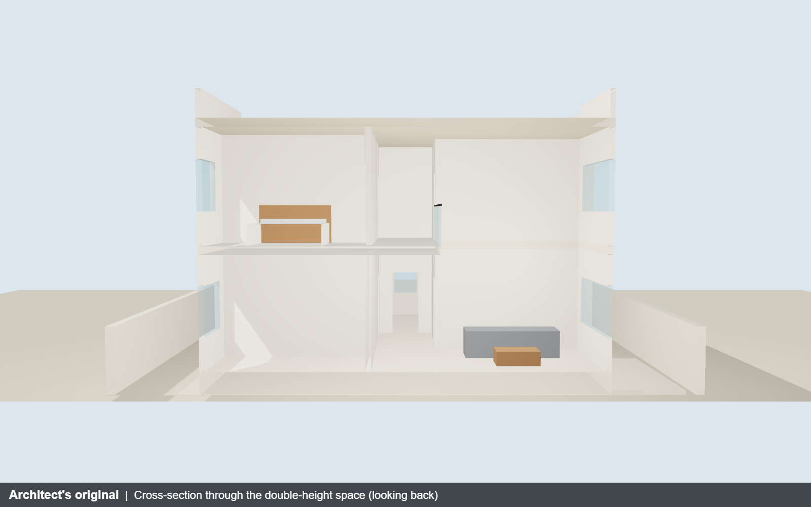

A 5-bedroom, two-storey joint-family house. The architect's original layout is compared with two owner revisions that move the kitchen and run a double-height space across the full width of the house. Floor plans are measured from the original drawing; the 3D views are massing models built from those plans.
Photo-realistic views of each design at dusk, rendered from the measured plans. All three designs have an open kitchen with an island and a set-back entrance. Finishes follow the owner's material list; furniture and decor are indicative. Each design ends with a camera map showing where every picture was taken. Click any image for the full size.
Same for all three designs
Front at dusk. Stone entrance portal with the door set back; the drawing room projects forward.
Open kitchen. Marble island, looking towards the lounge.Double height. Full-width open space with the bridge across the middle.First floor. The bridge and the floating stair.
Camera map. Where each picture was taken, on both floor plans.
CPlan 5: bridge on the right wall
Entrance. Looking in from the front door (ground floor as in Plan 2).Open kitchen. Marble island, looking towards the lounge (as in Plan 2).Double height. Nothing crosses the open space; the walkway runs along the right wall.
Camera map. Where each picture was taken, on both floor plans.
Walkthrough videos
94 seconds each: arrive from the street, circle the house, lift the roof, walk in through the glass entrance, climb the stair and step out onto the terrace.
AArchitect's original
BPlan 2: bridge in the middle
CPlan 5: bridge on the right wall
The three options

AArchitect's originalDouble-height space as a front-to-back strip on the right; large shared dining zone; simplest and cheapest to build.
BPlan 2: bridge in the middleKitchen and dining swapped; full-width double height; wide entrance hall; floating L-stair; shortest route upstairs.
CPlan 5: bridge on the right wallAs Plan 2, but nothing crosses the open space; bedroom 3 at the front left; longest route to bedroom 3.